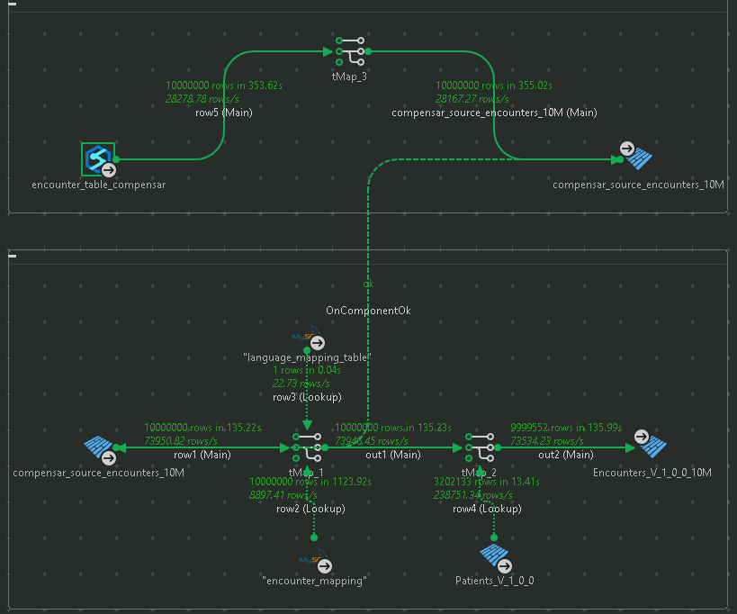
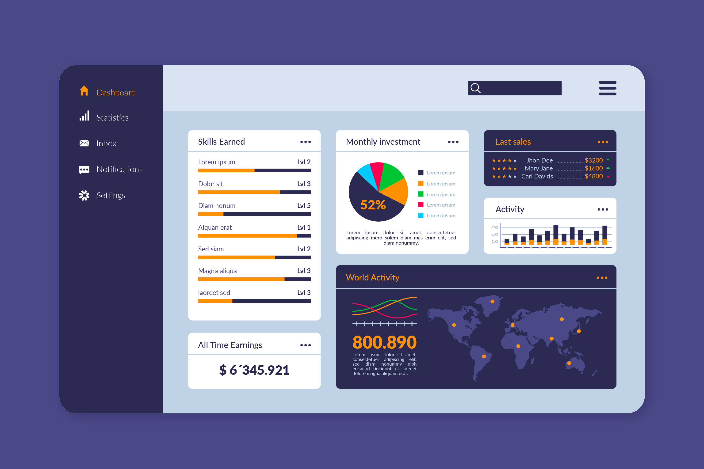
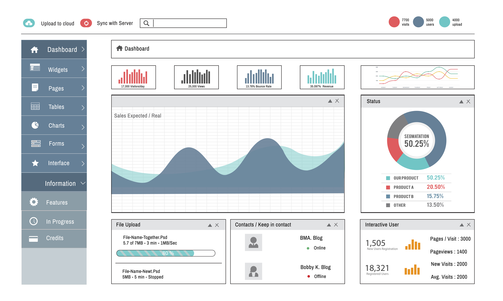
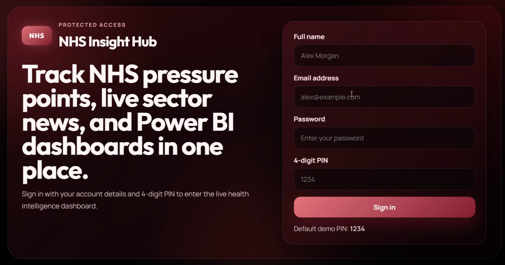

Building scalable data pipelines and analytics systems that drive business decisions.
View My Work
Talend ETL pipeline processing large datasets

Interactive business insights dashboards

Interactive business insights dashboards

NHS Data Pipeline & Analytics